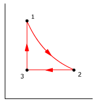
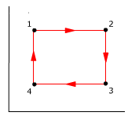
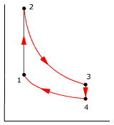
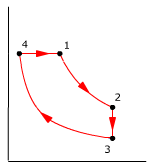
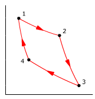

Máquinas térmicas
1Una máquina térmica absorbe 200 J de calor de un foco caliente, realiza trabajo y cede 160 J a un foco frío ¿Cuál es su rendimiento?
Solución
El trabajo producido será la diferencia entre el calor tomado y el devuelto:
T = 200 J - 160 J = 40 J
El rendimiento es la máquina es la relación entre el trabajo producido y el calor tomado:
η = 40 J / 200 J = 0,20
La máquina convierte en trabajo el 20% del calor que toma, el otro 80% se devuelve
2 Una máquina de 200 W trabaja a 10 ciclos por segundo con un rendimiento del 30% ¿Cuánto trabajo realiza en cada ciclo? ¿Cuánto calor se absorbe y se cede en cada ciclo?
Solución
Una potencia de 200 W significa que cada segundo produce 200 J de trabajo. Como en un segundo realiza 10 ciclos en cada ciclo producirá 20 J
Definición de rendimiento:
$$\begin{aligned}&\eta=\frac{\mathcal{T}}{Q_{\text{tomado}}}\\[6pt] &Q_{\text{tomado}}=\frac{\mathcal{T}}{\eta}=\frac{20\ \mathrm{J}}{0{,}3}=66{,}7\ \mathrm{J}\end{aligned}$$
Qcedido = 66.7 J - 20 J = 46.7 J
En cada ciclo se toman 66, 7 J de calor, se ceden 46,7 J de calor y se produce un trabajo de 20 J
30.32 moles de gas monoatómico,
que inicialmente ocupan 2.2 l a 2.4 at, recorren el ciclo:
1 - 2: Calentamiento a presión constante hasta un volumen de 4.4
l
2 - 3: Enfríamiento a volumen constante hasta una presión
de 1.2 at
3 - 1: Compresión isotérmica hasta volver al estado inicial
Calcula el trabajo y calor intercambiados en cada etapa y rendimiento
del ciclo
Solución
| n = 0,32 mol |
P1 = 2,4 at |
P2 = P1 |
P3 = 1,2 at |
|
V1 = 2,2 l |
V2 = 4,4 l |
V3 = V2 |
||
T1 |
T2 |
T1 |
En un gas monoatómico: cp = 5·R / 2, cv = 3·R / 2
 |
|
El trabajo neto en el ciclo será:
T = (533 + 0 - 370) J = 163 J
El calor intercambiado en el ciclo será:
Q = (1333 - 800 - 370) J = 163 J
Observa que el calor intercambiado es igual al trabajo neto
Y la variación de energía interna en el ciclo será:
ΔU = (800 - 800 + 0) J = 0 J
Observa que la variación de energía interna en el ciclo es igual a cero
$$\eta=\frac{\mathcal{T}_{\text{neto}}}{Q_{\text{tomado}}}=\frac{163\ \mathrm{J}}{1333\ \mathrm{J}}=0{,}122$$
El 12.2% del calor tomado en el ciclo se convierte en trabajo, el 87.8% restante se devuelve


4Una máquina térmica
que tiene como sustancia de trabajo 1 mol de gas diatómico recorre
el ciclo:
1 - 2: Expansión adiabática desde un volumen de 10
l a 2.64 at de presión hasta 20 l a 1 at
2 – 3: Compresión a presión constante hasta
el volumen original de 10 l
3 – 1: Calentamiento a volumen constante hasta la presión
original
Calcula el trabajo y calor intercambiados en cada etapa y el rendimiento
del ciclo
Solución
| n = 1 mol |
P1 = 2,64 at |
P2 = 1 at |
P3 = P2 |
|
V1 = 10 l |
V2 = 20 l |
V3 = V1 |
||
T1 |
T2 |
T3 |
En un gas diatómico: cp = 7·R / 2, cv = 5·R / 2, γ = 7/5
|
 |
|
El trabajo neto en el ciclo será:
T = (1616 - 1010 +0) J = 6 J
El calor intercambiado en el ciclo será:
Q = (0 - 3535 + 4141) J = 6 J
Observa que el calor intercambiado es igual al trabajo neto
Y la variación de energía interna en el ciclo será:
ΔU = (-1616 - 2525 + 4141) J = 0 J
Observa que la variación de energía interna en el ciclo es igual a cero
$$\eta=\frac{\mathcal{T}_{\text{neto}}}{Q_{\text{tomado}}}=\frac{606\ \mathrm{J}}{4141\ \mathrm{J}}=0{,}146$$
El 14.6% del calor tomado en el ciclo se convierte en trabajo, el 85.4% restante se devuelve
5Un gas monoatómico,
que inicialmente ocupa un volumen de 1 l a una presión de 2 at,
se expande a presión constante hasta que su volumen es 2.5 l, después
de lo cual se enfría a volumen constante hasta que su presión
es de 1 at. Entonces se comprime a presión constante hasta que
su volumen es de nuevo 1 l. Finalmente se calienta a volumen constante
hasta volver a su estado original.
Calcula el trabajo y calor intercambiados en cada etapa y el rendimiento
del ciclo
Solución
| n: Incógnita |
P1 = 2 at |
P2 = P1 |
P3 = 1 at |
P4 = P3 |
V1 = 1 l |
V2 = 2,5 l |
V3 = V2 |
V4 = V1 |
|
T1 |
T2 |
T3 |
T4 |
En un gas monoatómico: cp = 5·R / 2, cv = 3·R / 2
|
|
 |
|
El trabajo neto en el ciclo será:
T = (303 + 0 - 152 + 0) J = 151 J
El calor intercambiado en el ciclo será:
Q = (758 - 379 - 379 + 152) J = 152 J
Observa que el calor intercambiado es igual (Casi) al trabajo neto
Y la variación de energía interna en el ciclo será:
ΔU = (455 -379 - 227 + 152) J = 1 J
Observa que la variación de energía interna en el ciclo es igual a cero (Casi)
$$\eta=\frac{\mathcal{T}_{\text{neto}}}{Q_{\text{tomado}}}=\frac{151\ \mathrm{J}}{(758+152)\ \mathrm{J}}=0{,}166$$
El 16.6% del calor tomado en el ciclo se convierte en trabajo, el 83.4% restante se devuelve
6Partiendo de una presión
de 2 at y 360 K, dos moles de un gas monoatómico recorren el ciclo:
1 – 2: Calentamiento a volumen constante
2 – 3: Expansión isoterma
3 – 4: Enfriamiento a volumen constante
4 - 1: Compresión isoterma.
Calcula la variación de energía interna, el trabajo y calor
intercambiados en cada etapa y rendimiento del ciclo. Datos: P3
= 2·P4 , V3 = 3·V1
Solución
| n = 2 mol |
P1 = 2 at |
P2 |
P3 = 2 P4 |
P4 |
V1 |
V2 = V1 |
V3 = 3·V1 |
V4 = V3 |
|
T1 = 360 K |
T2 |
T3 = T2 |
T4 = T1 |
En un gas monoatómico: cp = 5·R / 2, cv = 3·R / 2
|
|
 |
|
El trabajo neto en el ciclo será:
T = (0 + 13102 +0 - 6551) J = 6551 J
El calor intercambiado en el ciclo será:
Q = (8945 + 13102 - 8945 - 6551) J = 6551 J
Observa que el calor intercambiado es igual al trabajo neto
Y la variación de energía interna en el ciclo será:
ΔU = (8945 + 0 - 8945 + 0) J = 0 J
Observa que la variación de energía interna en el ciclo es igual a cero
$$\eta=\frac{\mathcal{T}_{\text{neto}}}{Q_{\text{tomado}}}=\frac{6552\ \mathrm{J}}{22047\ \mathrm{J}}=0{,}297$$
El 29.7% del calor tomado en el ciclo se convierte en trabajo, el 70.3% restante se devuelve
7Partiendo de una presión
de 2 at y 360 K dos moles de un gas monoatómico recorren el ciclo:
1 - 2: Calentamiento a volumen constante
2 - 3: Expansión adiabática
3 - 4: Enfriamiento a volumen constante
4 - 1: Compresión
adiabática.
Calcula el trabajo y calor
intercambiados en cada etapa y el rendimiento del ciclo
Datos: P3 = 2·P4 , V3 = 3·V1
Solución
| n = 2 mol |
P1 = 2 at |
P2 |
P3 = 2 P4 |
P4 |
V1 |
V2 = V1 |
V3 = 3·V1 |
V4 = V3 |
|
T1 = 360 K |
T2 |
T3 |
T4 |
En un gas monoatómico: cp = 5·R / 2, cv = 3·R / 2, γ = 5/3
|
|
 |
|
El trabajo neto en el ciclo será:
T = (0 + 9289 +0 - 4645) J = 4644 J
El calor intercambiado en el ciclo será:
Q = (8945 + 0 - 4300 + 0) J = 4645 J
Observa que el calor intercambiado es igual (Casi) al trabajo neto
Y la variación de energía interna en el ciclo será:
ΔU = (8945 - 9289 - 4300 + 4645) J = 1 J
Observa que la variación de energía interna en el ciclo es igual (Casi) a cero
$$\eta=\frac{\mathcal{T}_{\text{neto}}}{Q_{\text{tomado}}}=\frac{4644\ \mathrm{J}}{8945\ \mathrm{J}}=0{,}519$$
El 51.9% del calor tomado en el ciclo se convierte en trabajo, el 48.1 % restante se devuelve


8Una máquina utiliza
un mol de gas que, partiendo de un volumen de 24.6 l a 400 K, recorre
el ciclo:
1 - 2: Expansión isotérmica hasta duplicar el
volumen
2 – 3: Enfriamiento a volumen constante hasta 300 K
3 - 4: Compresión isotérmica hasta la presión
inicial
4 - 1: Calentamiento a presión constante hasta la temperatura
inicial
Calcula la variación
de energía interna, el trabajo y calor intercambiados en cada etapa
y rendimiento del ciclo. Dato: cv = 21 J/mol K
Solución
| n = 1 mol |
P1 |
P2 |
P3 |
P4 = P1 |
V1 = 24,6 l |
V2 = 2·V1 |
V3 = V2 |
V4 |
|
T1 = 400 K |
T2 = T1 |
T3 = 300 K |
T4 = T3 |
cv = 21 J / mol K
|
|
 |
|
El trabajo neto en el ciclo será:
T = (2296 + 0 - 1722 + 828) J = 1402 J
El calor intercambiado en el ciclo será:
Q = (2296 - 2100 - 1722 + 2928) J = 1402 J
Observa que el calor intercambiado es igual al trabajo neto
Y la variación de energía interna en el ciclo será:
ΔU = (0 - 2100 + 0 + 2100) J = 0 J
Observa que la variación de energía interna en el ciclo es igual a cero
$$\eta=\frac{\mathcal{T}_{\text{neto}}}{Q_{\text{tomado}}}=\frac{1402\ \mathrm{J}}{(2296+2928)\ \mathrm{J}}=0{,}268$$
El 13,2% del calor tomado en el ciclo se convierte en trabajo, el 86,8 % restante se devuelve
9Demuestra que el rendimiento
del ciclo de Carnot viene dado por: η = (T1– T2)
/ T1
Solución
En el ciclo de Carnot n moles de gas realizan una expansión isoterma (1 - 2), una expansión adiabática (2 - 3), una compresión isoterma (3 - 4) y una compresión adiabática (4 - 1)
| n |
P1 |
P2 |
P3 |
P4 |
V1 |
V2 |
V3 |
V4 |
|
T1 |
T2 = T1 |
T3 |
T4 = T3 |
|
|
 |
|
El trabajo neto en el ciclo será:
$$\begin{aligned}&\mathcal{T}=n\,R\,T_1\ln\frac{V_2}{V_1}-n\,c_v\,(T_3-T_1)+n\,R\,T_3\ln\frac{V_4}{V_3}-n\,c_v\,(T_1-T_3)\\[6pt] &\mathcal{T}=n\,R\,T_1\ln\frac{V_2}{V_1}+n\,R\,T_3\ln\frac{V_4}{V_3}\end{aligned}$$
El calor intercambiado en el ciclo será:
$$Q=P_1\,V_1\ln\frac{V_2}{V_1}+P_3\,V_3\ln\frac{V_4}{V_3}$$
El calor intercambiado es igual al trabajo neto, como debe ser
Y la variación de energía interna en el ciclo será:
$$\Delta U=0+n\,c_v\,(T_3-T_1)+0+n\,c_v\,(T_1-T_3)=0$$
Antes de calcular el rendimiento hay que determinar, en la expresión del calor, la parte que correspon-de al calor tomado:
P3·V3 Ln V4 / V3 es negativo (V4 < V3) por tanto este sumando es Qcedido
P1·V1 Ln V2 / V1 es positivo (V2 > V1) por tanto este sumando es Qtomado
El rendimiento del ciclo será:
$$\eta=\frac{\mathcal{T}_{\text{neto}}}{Q_{\text{tomado}}}=\frac{n\,R\,T_1\ln(V_2/V_1)+n\,R\,T_3\ln(V_4/V_3)}{n\,R\,T_1\ln(V_2/V_1)}=1+\htmlData{pc-ac=ac12}{\frac{T_3\ln(V_4/V_3)}{T_1\ln(V_2/V_1)}}$$
Y ahora viene el truco de la demostración: |
$$\htmlData{pc-ac=ac13}{\boxed{\frac{V_4}{V_3}=\frac{V_2}{V_1}}}$$ |
$$\begin{aligned}&\eta=1+\frac{T_3\ln(V_1/V_2)}{T_1\ln(V_2/V_1)}=1-\frac{T_3}{T_1}\\[6pt] &\eta=\frac{T_1-T_3}{T_1}\end{aligned}$$
10Una máquina de Carnot
trabaja entre dos focos a temperaturas 300 K y 200 K ¿Cuál
es el rendimien-to? Si en cada ciclo absorbe 100 J de calor del foco caliente
¿qué trabajo realiza? ¿cuánto calor cede?
Solución
El rendimiento de una máquina de Carnot reversible viene dado por:
$$\begin{aligned}&\eta=\frac{T_1-T_2}{T_1}\\[6pt] &\eta=\frac{(300-200)\ \mathrm{K}}{300\ \mathrm{K}}=0{,}33\end{aligned}$$
Un rendimiento del 33% significa que el 33% del calor tomado se convierte en trabajo
Si toma 100 J del foco caliente convertirá 33 J en trabajo y los restantes 67 J los cederá al foco frio
11Una máquina de vapor
trabaja entre un foco térmico a 100 ºC y un foco frío
a 0 ºC ¿Cuál es el máximo rendimiento posible
de esta máquina?
Solución
El máximo rendimiento de cualquier máquina térmica es el de una máquina de Carnot que trabaje entre las mismas temperaturas:
$$\begin{aligned}&\eta=\frac{T_1-T_2}{T_1}\\[6pt] &\eta=\frac{(373-273)\ \mathrm{K}}{373\ \mathrm{K}}=0{,}268\end{aligned}$$
El 26.8% del calor que tomase del foco caliente lo convertiría en trabajo
12¿Qué aumenta más
el rendimiento de una máquina de Carnot: aumentar en 5 K la temperatura
del foco caliente o disminuir en 5 K la temperatura del foco frío?
Solución
Rendimiento de la máquina de Carnot:
$$\eta=\frac{T_1-T_2}{T_1}$$
Rendimiento de la máquina al aumentar la temperatura del foco caliente en ΔT:
$$\eta=\frac{(T_1+\Delta T)-T_2}{(T_1+\Delta T)}$$
Rendimiento de la máquina al disminuir la temperatura del foco frío en ΔT:
$$\eta'=\frac{T_1-(T_2+\Delta T)}{T_1}$$
Calculamos la diferencia entre estos rendimientos:
$$\begin{aligned}&\eta'-\eta=\frac{T_1-(T_2+\Delta T)}{T_1}-\frac{(T_1+\Delta T)-T_2}{(T_1+\Delta T)}\\[6pt] &\eta'-\eta=\htmlData{pc-ac=ac14}{\boxed{-\frac{(T_2+T_1+\Delta T)\,\Delta T}{T_1\,(T_1+\Delta T)}}}\end{aligned}$$
El resultado negativo indica que η > η', luego aumentará más el rendimiento si aumentamos la temperatura del foco caliente
13Una máquina consume 200
J de un foco caliente a 373 K, realiza 48 J de trabajo y cede 152 J a
un foco frío a 273 K ¿Cuánto trabajo 'se pierde'
por ciclo debido a la irreversibilidad de la máquina?
Solución
El máximo rnedimiento que podría tener la máquina es el de una máquina de Carnot trabajando entre 373 k y 273 K:
$$\begin{aligned}&\eta=\frac{T_1-T_2}{T_1}\\[6pt] &\eta=\frac{(373-273)\ \mathrm{K}}{373\ \mathrm{K}}=0{,}268\end{aligned}$$
Con un rendimiento del 26.8% tomando 200 J del foco caliente se producirían 53.6 J de trabajo. Como en realidad produce se 48 J de trabajo 'se pierden' 5.6 J
14Una máquina de vapor
toma vapor sobrecalentado a 270 ºC y descarga de su cilindro vapor
conden-sado a 50 ºC. Su rendimiento es del 30%. a) Comparar este
rendimiento con el mejor posible para estas temperaturas b) Si la potencia
del motor es 200 kW ¿cuánto calor cede la máquina
a su entorno en una hora?
Solución
El máximo rendimiento es el de una máquina de Carnot trabajando entre las mismas temperaturas:
$$\begin{aligned}&\eta=\frac{T_1-T_2}{T_1}\\[6pt] &\eta=\frac{(543-323)\ \mathrm{K}}{543\ \mathrm{K}}=0{,}405\end{aligned}$$
El rendimiento de la máquina es el 74.1% del máximo posible (0.3/0.405)
b)
El trabajo que produce el motor en una hora es:
T = 200·103 W·3600 s = 7.2·108 J
Aplicando la definición de rendimiento podemos saber el calor que ha tomado en 1 hora:
$$\begin{aligned}&\eta=\frac{\mathcal{T}}{Q_1}\;\rightarrow\;Q_1=\frac{\mathcal{T}}{\eta}\\[6pt] &Q_1=\frac{7{,}2\cdot10^{8}\ \mathrm{J}}{0{,}30}=24\cdot10^{8}\ \mathrm{J}\end{aligned}$$
Si cada hora toma 24·108 J de calor y produce 7.2·108 J de trabajo está claro que devuelve , por hora, 16.8·108 J de calor
15En cada ciclo una máquina
absorbe 150 J de un foco a 100 ºC y cede 125 J a un foco a 20 ºC
¿Cuál es el rendimiento de la máquina? ¿Qué
relación hay entre este rendimiento y el de una máquina
de Car-not que trabajara entre los mismos focos?
Solución
Si toma 150 J de calor y cede 125 J de calor producirá 25 J de trabajo
El rendimiento de la máquina será, por definición:
$$\begin{aligned}&\eta=\frac{\mathcal{T}}{Q_1}\\[6pt] &\eta=\frac{25\ \mathrm{J}}{150\ \mathrm{J}}=0{,}167\end{aligned}$$
El rendimiento de una máquina de Carnot que trabajase entre las mismas temperaturas sería:
$$\begin{aligned}&\eta=\frac{T_1-T_2}{T_1}\\[6pt] &\eta=\frac{(373-293)\ \mathrm{K}}{373\ \mathrm{K}}=0{,}214\end{aligned}$$
El rendimiento de la máquina sería el 78% (0.167 / 0.214) del rendimiento de la de Carnot
0Una máquina térmica tiene un rendimiento del 35% ¿Cuánto trabajo realiza por ciclo si en cada uno absorbe 150 J de calor del foco caliente? ¿Cuánto calor no se aprovecha en cada ciclo? Si la máquina realiza 30 ciclos por segundo ¿qué potencia desarrolla?
Solución
Un rendimiento del 35% significa que el 35% del calor tomado se convierte en trabajo:
T = 0,35·150 J = 52.5 J
El calor que no se convierte en trabajo se devuelve:
Qdevuelto = 150 J - 52.5 J = 97.5 J
En cada ciclo la máquina produce 52.5 J de trabajo mecánico. En 1 s realiza 10 ciclos luego producirá 52.5·10 = 525 J. La potencia será entonces:
W = 525 J / 1 s = 525 W